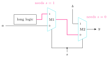

Definition
A gate input is sensitised when every other input of the gate holds the non-controlling value (1 for AND/NAND, 0 for OR/NOR; XOR is always sensitised). A path is statically sensitisable if some input vector sensitises all its gates at once. A path that no vector sensitises is false; the delay of the circuit is the length of its longest true path.
Example
Two multiplexers in series with the same select  : the long path through the "1" input of the first mux and the "0" input of the second needs for the first and
: the long path through the "1" input of the first mux and the "0" input of the second needs for the first and  for the second. No vector does both: the path is false, and the real critical path is shorter than the topological one. Carry-skip adders are built exactly this way: the long ripple path through a block is false when the skip path is taken.
for the second. No vector does both: the path is false, and the real critical path is shorter than the topological one. Carry-skip adders are built exactly this way: the long ripple path through a block is false when the skip path is taken.
Picture

at the second, so no input change can travel along it.Intuition
A path is a road on the map; whether a car can drive it depends on the traffic lights, and here the lights are wired never to be green together.
Pitfall
Declaring paths false by hand (set_false_path) is dangerous: a wrong declaration hides a real violation. Multicycle paths (results needed only every  cycles) are a related, legitimate exception.
cycles) are a related, legitimate exception.